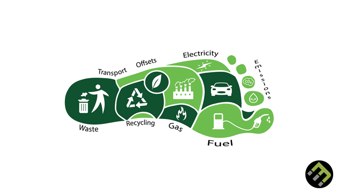

About Us
Introduction
Hello! We're a team of aspiring computer scientists with a shared passion for environmental sustainability.
We decided to combine
all our heads in one to make TerraTrack, the ultimate tool for cultivating eco friendly habits.
Change Starts In Each of Us
With global warming reaching what feels like record highs every other year and with the increase of it, an
increased sense of helplessness and indifference among the majority of people,
we knew that there had to be a way to make change feel attainable and straightforward, no matter the
individual and their background. This is where the concept for TerraTrack was born.
It's designed for the environmentally-minded, but encourages and gamifies actionable steps for anyone to
become more eco-friendly in their lifestyle.

Tracking the Carbon Footprint
To measure how much energy is being used excessively, TerraTrack comes with a carbon footprint calculator
that will measure approximate water/electricity
usage overtime and between time intervals, allowing you to know exactly when you use the most power and
where it's being used.
It then references average/acceptable values to provide intelligent suggestions for where practical, simple
changes can be made
to compound into big savings overtime.

Save Earth, Have Fun!
As serious of a matter as environmentalism can be, it can also be a fun and sociable one! This was the
motivation behind
our integrated point-based system. You can get points based on how much of a change in your carbon footprint
is made and
see how you stack up against other users.